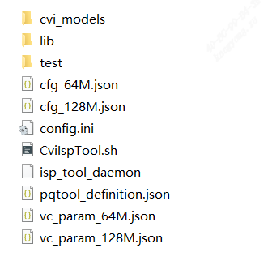
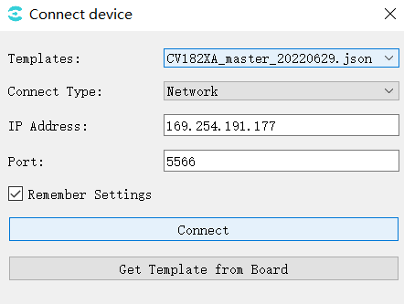
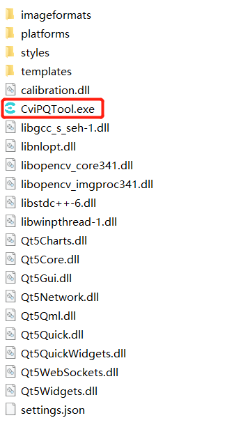
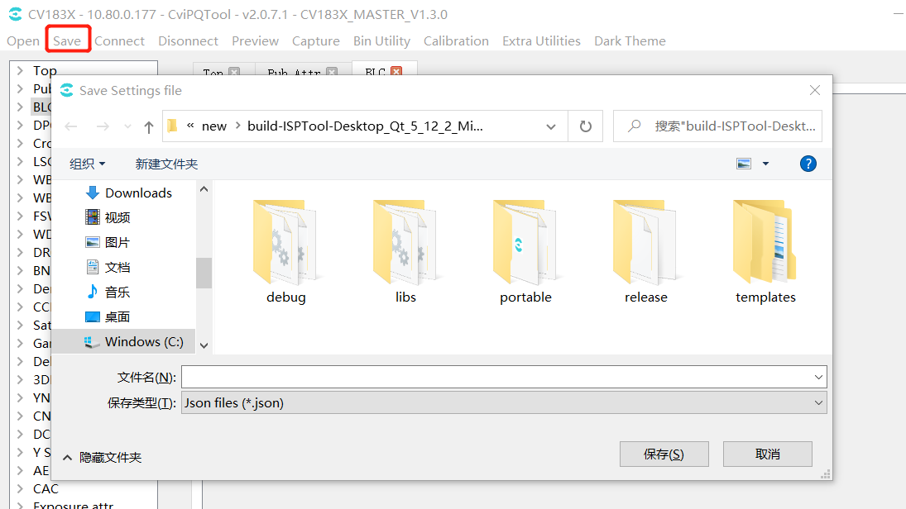
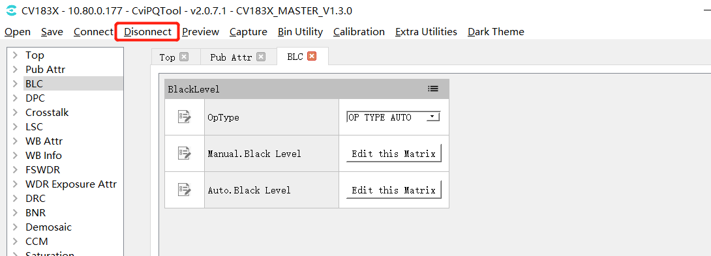
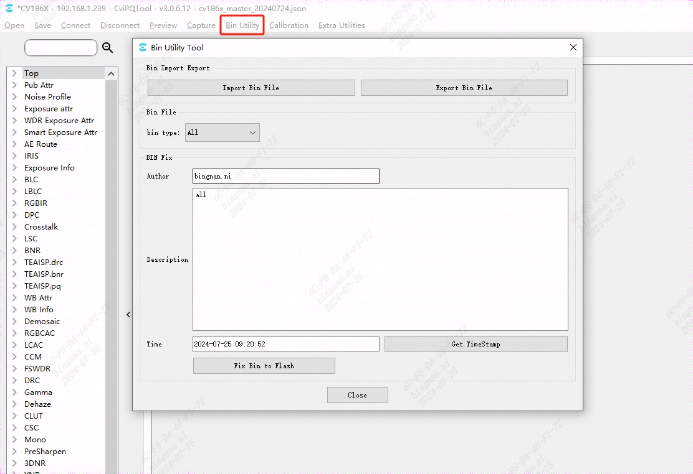
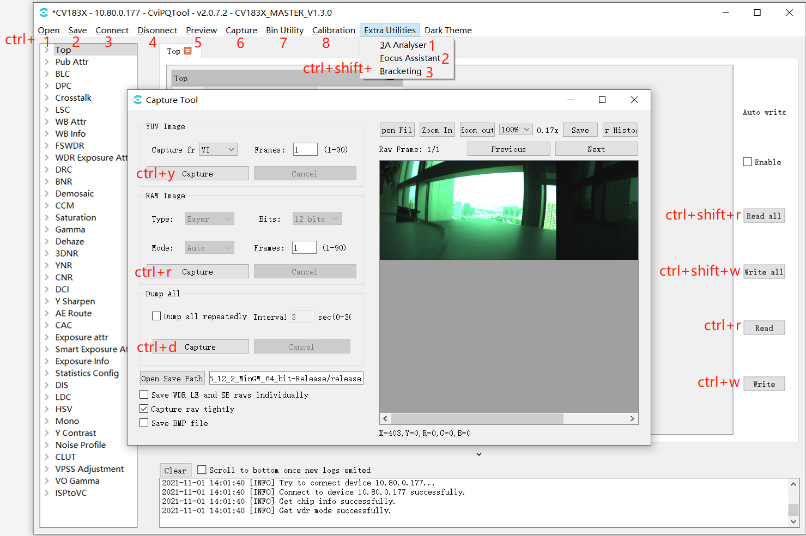

2. 概述¶
2.1. 工具概述¶
CviPQ Tool 是专业的图像质量调试工具，将工具跟单板连接以后，提供用户在线调试ISP各模块的参数调节，同时还能实时观看参数设置完后的效果。另外，还提供ISP 标定功能，对需要标定的模块产生各类数据，提供给用户调节参数，获得更佳的图像质量。
CviPQ Tool工具架构如 图 所示，主要分为PC端的标定工具在线调试工具 (Tuning Tools) 、(Calibration Tools)和分析工具 (Analysis Tools)，以及抓拍工具 (Dump Tools)。

图 2.1 CviPQ Tool工具架构图¶
2.2. 环境准备说明¶
2.2.1. 软硬件需求¶
硬件需求
台式计算机或便携式计算机
单板硬件（具有网络端口）
网络连接线
显示器的分辨率的高和宽分别至少1024和768
软件需求
安装至少Windows 7 64-bit 或以上的版本
媒体播放器，如VLC media player
2.2.2. 物理链路连接¶
CviPQ Tool工具分为PC客户端软件和板端服务软件两部分，二者通过网络通信进行交互。
物理链路连接可使用直连和局域网络连接两种方式：
直连方式：
使用网线两端分别接入PC和板端的网络端口。
局域网络方式：
使用网线将板端网络端口接到路由器的本地端口（ LAN口）。
如果PC使用无线网络，则按照无线热点的接入方法将PC接入到当前路由器的无线热点；如果使用有线网络，则同样地使用网线连接PC网络端口和路由器的本地端口 （ LAN口）。
2.2.3. EVB Uart连接说明¶
请参考“EVB使用手册”
2.2.4. 发布包目录说明¶
发布包中的isp_tool_daemon.tar.gz拷贝到板端，解压生成install目录，目录结构如下图所示。
{kind=link}

config.ini是运行isp_tool_daemon时的配置文件，包括配置log打印等级、设置PQbin默认生成路径、sensor类型的文件路径。
CviIspTool.sh是快速启动isp_tool_daemon的脚本文件。
2.2.5. Linux系统下板端软件的安装与运行¶
步骤1. isp_tool_daemon.tar.gz解压后的目录结构如 2.2.4. 发布包目录说明 章节图所示。
步骤2. 配置板端IP， ifconfig eth0 xxx.xxx.xxx.xxx
步骤3. 进入解压后生成install目录， cd /mnt/sd/install
步骤4. 执行“./CviISPTool.sh”指令启动板端程序
步骤5. 连接VLC显示影像

步骤6. 在PC端开启CviPQTool并且输入板端IP即可连上板端
{kind=link}

2.3. PC端软件的安装¶
CviPQ Tool PC端软件是绿色免安装软件，只需将软件压缩包解压到任意可写目录，在解压目录下找到CviPQTool.exe双击即可运行。
解压后包的目录结构如 图 所示。
{kind=link}

图 2.2 解压后的目录结构¶
CviPQTool.exe 是CviPQ Tool的执行程序，直接双击或右键打开即可运行
settings.json是CviPQ Tool的配置文件，当用户在连接单板接口点选记住设置时参数会被保存到这里
imageformats/platforms/styles目录下是 CviPQ Tool所依赖插件的库文件，其它的DLL库文件主要是Qt和opencv的运行时库
2.4. 快速入门¶
2.4.1. 连接单板界面¶
用户在每次运行CviPQTool.exe的时候，会弹出连接单板窗口，如 图 所示，让用户能快速连接单板进行图像质量调试。

图 2.3 连接单板接口图例¶
Templates: 选择tool ui模板；
Connect Type: 网络连接；
IP Address: 板端IP地址；
Port: 端口号；
Remember Settings: 保存当前窗口设置到settings.json，下次开启工具自动导入设置。
Get Template from Board: 从板端获取ui模板（也可手动将ui json文件放到templates目录，重启tool，再从Templates下拉框选择）
设置好选项，点击Connect按钮，进入工具主界面，工具会自动通过网络连接PC与单板，并且还会自动从板端读取所有调试项的参数数值。
注解
注意：开启tool时，Templates中是初始默认ui模板，可以点击Get Template from Board按钮从板端获取最新匹配的ui模板，然后从Templates下拉框选择刚获取的json,再点击Connect按钮，等待初始化完Ui，进入tool主界面。
2.4.2. 工具主界面¶
工具主界面如 图 所示。

图 2.4 工具主界面¶
CviPQ Tool 工具的主界面可以分为以下几个区域:
(1).工具栏: 提供一些常用的操作快捷选项
(2).调试表面板: 显示所有模块的可调试项
(3).调试区域: 此区域会显示由调试表面板中所选中模块对应的调试页面
(4).读/写：可选择自动读写、读写所有页面或当前页面数据
(5).提示栏: 显示通信日志
2.4.3. 常用操作¶
2.4.3.1. 保存调试数据文件¶
在工具栏中点击 “Save” 按钮，会弹出一个选择路径的对话框。当用户选定好一个储存路径时，工具会将当前调试面板表的参数进行保存，保存的文件格式为 *.json，储存参数以及调试表的结构。
{kind=link}

图 2.5 储存调试数据文件界面图例¶
2.4.3.2. 打开调试数据文件¶
在工具栏中点击 “Open” 按钮，会弹出一个对话框，让用户选择要打开的数据文件。当打开数据文件时，工具会将文件中的相关参数加载并将其显示在工具调试面板。

图 2.6 打开调试数据文件界面图例¶
2.4.3.3. 连接单板¶
在工具栏中点击 “Connect” 按钮，会弹出连接单板窗口如 图 所示。用户可在 “IP Address” 字段中输入单板的 IP 地址，并在 “Port” 字段中输入埠号后，点击 “Connect”，使工具连接单板。

图 2.7 Connect窗口¶
2.4.3.4. 断开与单板的连接¶
在工具连接接单板的情况下，在工具栏中点击 “Disconnect” 按钮，即可中断tool与单板的连接。
{kind=link}

图 2.8 Disconnect 按钮¶
2.4.3.5. 图像预览¶
点击工具栏“Preview”按钮，弹出Preview窗口，点击“Get Single Image”按钮，将抓取并显示图像。（工具与单板连接，单板连接VLC或显示屏正常出图）

图 2.9 图像预览窗口¶
2.4.3.6. 抓拍工具¶
点击工具栏“Capture”按钮，弹出如图Capture Tool窗口，详细介绍见 3.4.1. 抓拍工具使用说明 章节。

图 2.10 抓拍工具窗口¶
2.4.3.7. Bin导入导出¶
点击工具栏“Bin Utility Tool”按钮，弹出如图Bin Utility Tool窗口。
{kind=link}

图 2.11 Bin导入导出窗口¶
Export Bin File: 将板端参数导出到pc端保存为bin文件；
Import Bin File: 将pc端bin文件导入板端；
Fix Bin To Flash: 在板端生成bin文件；
Author,Description,Time为文件描述信息，板端运行加载bin时，串口会打印。
2.4.3.8. 标定工具¶
点击工具栏“Calibration”按钮，弹出如图标定工具窗口，详细介绍见 3.2. ISP标定工具 章节。

图 2.12 Calibration工具窗口¶
2.4.3.9. 辅助工具¶
点击工具栏“Extra Utilities”按钮，弹出下拉选项，可选3A Analyser,Focus Assistant,Bracketing，Continuous Raw，DRC Tone Viewer工具，详细介绍见 3.4. 其他辅助工具使用说明 章节。

图 2.13 辅助工具窗口¶
2.4.3.10. 快捷键¶
快捷键如下图所示：
{kind=link}
